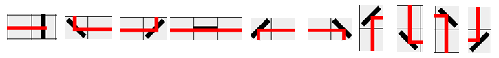

Click below to download the game and enjoy!
I made this project for a few reasons. One of my students gave me the idea for this project. Not only was this a really fun challenge, it highlights a small piece of most of my skills and understanding. I wasn’t aiming for a large project with hundreds of features, but rather something easy to understand, easy to explore, and filled with core concepts.
My goal was to make a basic Laser Maze example with the best code formatting I could. Every line of code and architecture design decision prioritizes conciseness and readability. This project was built to be a portfolio piece that is easily digestible.
Any code reviews, questions, and comments would be greatly appreciated.
OOP is used primarily for abstraction and clarity. For example, the Graphics class extends JFrame for rendering, and the Controls class extends MouseListener to manage user input.
These relationships clarify each class’s purpose without overcomplicating reuse.
A HashMap tracks mirror objects. Custom equals and hashCode methods ensure mirrors with the same (x, y) position are treated as duplicates, regardless of rotation.
I considered using Java's record type, but the rotation field needed mutability, so I chose a traditional class instead.
The laser algorithm simulates a beam hopping through a grid, changing direction when hitting mirrors. Using trigonometric logic, the beam reflects realistically, and a line is drawn for each hop to form a continuous beam. This demonstrates solving a difficult problem by breaking it down into a sequence of smaller, more digestable algorithmic steps.

I created custom annotations and used reflection to enforce that certain classes include specific parameters — such as a Graphics object for rendering or a MouseEvent for handling input.
This shows my ability to write self-validating, scalable code.
Unit tests are included for the core multi-step logic. While I don’t test every line, I believe complex processes should be validated thoroughly.
Basic UI interactions demonstrate an understanding of MouseEvent handling and rendering with java.awt.Graphics.
All functions are concise and follow the single-responsibility principle. Indentation is deliberate, emphasizing simplicity and maintainability.
Comments focus on explaining why decisions were made, not just what the code does — making the project easier to understand and maintain.
The code follows modern, maintainable design principles — including enforcing contracts via annotations, minimizing class responsibilities, and ensuring the code is modular, testable, and easy to expand.
The project is packaged as a downloadable JAR and hosted on GitHub Pages — entirely free to use. The full source code is available on GitHub. Contributions are welcome!
Possible feature ideas include:
I’m looking for hands-on experience working with a professional software team — ideally one where I can learn from experienced developers. After three years of teaching computer programming, I’m ready to return to a learning role and deepen my understanding of real-world software development.
My goals are to:
While I’ve used these technologies independently, I know the right team will help me grow faster and prepare me for long-term success.